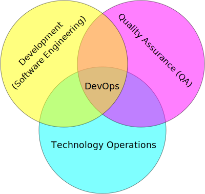

Session Summary
- Devops introduction
- Configuration management introduction
Devops Introduction
What is it?
"A software development method that stresses communication, collaboration and integration between software developers and information technology (IT) operations professionals." [Wikipedia]
| [Wikipedia] | http://en.wikipedia.org/wiki/DevOps |
Definition of Devops
- Software Engineering (Dev)
- Technology Operations (Ops)
- Quality Assurance (QA)

{kind=link}
Wikipedia (cc)
The old view
| "Dev": | side being the "makers" |
|---|---|
| "Ops": | side being the "people that deal with the creation after its birth” |

photo by http://thoriseador.deviantart.com/ (CC)
This siloed environment has created much harm in the industry and the core reason behind creating Devops.
Burn down those silos!
History of Devops
mid-2000s
"Hey, our methodology of running systems seems to still be in a pretty primitive state despite years of effort. Let’s start talking about doing it better"
Velocity Conf 2008/2009 - increased presentations on "Agile System Administration"
Agile 2008 Conf - "Agile Infrastructure" BOF -- nobody showed up!
2009 DevOpsDays in Ghent, Belgium - Patrick Debois
The Agile Approach
- Iterative, incremental
- Requirements change often thus need to be adaptive
- Very short feedback loop and adaptation cycle
- Quality focus
Manifesto:
- Individuals and interactions over processes and tools
- Working software over comprehensive documentation
- Customer collaboration over contract negotiation
- Responding to change over following a plan
That is, while there is value in the items on the right, we value the items on the left more.
Adapting Agile to Ops
Widening the principles towards infrastructure
"Infrastructure as code" - i.e. configuration management
Integrating ops with dev, QA and product in the product teams
Continuous Integration
"Give your developers a pager and put them on call"
Utilizing more specific metric and monitoring schemes
Better Tools enable Devops
Explosion of new tools over the past few years:
- Release tools (jenkins, travisci, etc)
- Config Management (puppet, chef, ansible, cfengine)
- Orchestration (zookeeper, noah, mesos)
- Monitoring & Metrics (statsd, graphite, etc)
- Virtualization & containerization (AWS, Openstack, vagrant, docker)
It's not NoOps
- Existing ops principles, processes and practices have not kept pace
- Business & dev teams need more agility to keep up with competitors
- Deep dev skill set + Deep ops skill set == awesomesauce
- Ops people need to do a little dev
- Dev people need to do a little ops
What is Devops Video
Devops Explained: No Horse Manure
Configuration Management
What is it?
"Configuration management is the process of standardizing resource configurations and enforcing their state across IT infrastructure in an automated yet agile manner." [PuppetLabs]
| [PuppetLabs] | http://puppetlabs.com/solutions/configuration-management |
History of CM
- mid-1990s -- "snowflake system"; few systems
- Rise of Unix-like systems and commodity x86 hardware increased the need
- CFEngine -- First release 1993; v2 released in 2002
- mid-2000s through present
- More agile CM systems emerged developed with the cloud in mind
- 2008
- provisioning and management of individual systems were well-understood
Infrastructure as code
- CM enables ops to define their infrastructure in code
- Install packages, configure software, start/stop services
- Ensure a state of a machine
- Ensure policies and standards are in place
- Provide history of changes for a system
- Repeatable way of rebuild a system
- Orchestrate a cluster of services together
CM Platforms
- CFengine
- Lightweight agent system. Manages configuration of a large number of computers using the client–server paradigm or stand-alone.
- Puppet
- Puppet consists of a custom declarative language to describe system configuration, distributed using the client–server paradigm.
CM Platforms (part 2)
- Chef
- Chef is a configuration management tool written in Ruby, and uses a pure Ruby DSL for writing configuration "recipes". Also a client-server model.
- Ansible
- Combines multi-node deployment, ad-hoc task execution, and configuration management in one package. Utilizes SSH with little to no remote agents.
Puppet Example
- Install apache and start the service
- Puppet Domain Specific Language (DSL)
package { "apache":
name => "httpd",
ensure => present,
}
service { "apache":
name => "apache",
ensure => running,
enable => true,
require => Package["apache"],
}
Chef Example
- Install apache and start the service
- Ruby code
package "apache" do
package_name "httpd"
action :install
end
service "apache" do
action [:enable, :start]
end
CM Platform Comparison
- CFEngine scales like mad, not very agile
- Puppet
- Uses a list of dependencies and figures out what order to run it in
- The Puppet DSL can become a blocker and a problem, puppet also has scaling issues
- Chef
- Executes commands and scripts as they are listed with minimal amount of dependencies
- Using ruby offers both its advantages and disadvantages
- Each platform offers its own level of complexity
References
Traditional Development Workflow
Scenario: Developer Mary Smith wants to deploy SystemView to a server administered by Ivan Bofh, a strict old-school sysadmin.
Email #1
>>>>>> On April 3, 2013, at 4:22 PM, Mary Smith <msmith@cruftware.com> wrote:
>>>>>>
>>>>>> Ops team,
>>>>>>
>>>>>> As discussed in the release schedule distributed by Mr. Bossman on 2/5, the
>>>>>> development team is ready to deploy our flagship product SystemView this week.
>>>>>> We will need Python 3.4 an Virtualenv on the production server, as well as a
>>>>>> correctly configured Nginx vhost to direct users to the site.
>>>>>>
>>>>>> When we log into the production server to deploy the app's code, we'll need
>>>>>> permission to write to /var/www and all of /etc for configuration reasons.
>>>>>>
>>>>>> Please also create the user and tables detailed in the attached spreadsheet on
>>>>>> our MySql 5.7 database.
>>>>>>
>>>>>> Mary Smith
>>>>>> Lead Developer, CruftWare SystemView product division
Email #2
>>>>> On April 5, 2013, at 9:15 AM, Ivan Bofh <ibofh@cruftware.com> wrote:
>>>>>
>>>>> Mary,
>>>>>
>>>>> Our production systems are standardized to CentOS 6, so Python is only
>>>>> supported up to version 2.6. The Python 2.6 version of virtualenv can be
>>>>> installed after you work with legal to file documentation of a full security
>>>>> audit of the package.
>>>>>
>>>>> Providing any account, let alone root, to developers on a production system is
>>>>> absolutely out of the question. Just document the app's deployment process
>>>>> clearly and we'll handle it.
>>>>>
>>>>> Ivan Bofh
>>>>> Senior Systems Engineer, CruftWare
Email #3
>>>> On April 5, 2013, at 11:32 AM, Mary Smith <msmith@cruftware.com> wrote:
>>>>
>>>> Ivan,
>>>>
>>>> That sounds like it will be simpler to just install the dependencies directly
>>>> on the server instead of using virtualenv. I should be able to include this
>>>> in the Jenkins configuration, as long as the CI users is running as root.
>>>> Speaking of which, the development team will need access to Jenkins or other
>>>> continuous integration in order to automatically update the site when changes
>>>> are pushed.
>>>>
>>>> Is mysql-dev installed yet? Also please confirm that the database is at
>>>> systemview-prod.mysql57.cruftware.com.
>>>>
>>>> Mary Smith
>>>> Lead Developer, CruftWare SystemView product division
Email #4
>>> On April 6, 2013, at 10:08 AM, Ivan Bofh <ibofh@cruftware.com> wrote:
>>>
>>> Mary,
>>>
>>> Why do you need to use Jenkins? I Googled it and it looks like a non-standard
>>> and immature implementation of some of CFEngine's features. Just send me a
>>> CFEngine configuration file for the settings that you need. The updates can be
>>> done with an SVN post-commit hook.
>>>
>>> Due to administrative decisions that Mr. Bossman explained in a company-wide
>>> memo a couple of months ago, absolutely no dev libraries may be installed on
>>> production servers. Servers are for serving, not for compiling.
>>>
>>> Ivan Bofh
>>> Senior Systems Engineer, CruftWare
Email #5
>> On April 6, 2013, at 10:14 AM, Mary Smith <msmith@cruftware.com> wrote:
>>
>> Do you at least have the Nginx vhost and uWsgi installation ready?
>>
>> Mary Smith
>> Lead Developer, CruftWare SystemView product division
>>
>> On April 6, 2013, at 1:53 PM, Ivan Bofh <ibofh@cruftware.com> wrote:
>>
>> We don't use Nginx or uWsgi. The specs should have said to convert the app to
>> work with Apache and mod_wsgi for production deployment.
>>
>> Ivan Bofh
>> Senior Systems Engineer, CruftWare
Email #6
> On April 6, 2013, at 2:37 PM, Mary Smith <msmith@cruftware.com> wrote:
>
> Ivan,
>
> What's the URL for the database?
>
> Mary Smith
> Lead Developer, CruftWare SystemView product division
>
On April 6, 2013, at 4:22 PM, Ivan Bofh <ibofh@cruftware.com> wrote:
Mary,
You'll have to contact Sharon Negative (snegative@cruftware.com), our DBA, and
file a ticket to get the database access. She won't be back from vacation for
another 2 weeks so it might take awhile.
Ivan Bofh
Senior Systems Engineer, CruftWare
DevOps Workflow
Scenario: DevOps-oriented developer Simon Johnson wants to deploy SystemView to a server administered by Ada Opdev, a DevOps-oriented sysadmin.
IRC #1
14:03 < JnomiS> AdaOpdev: hey, all the systemview tests are passing on
python 3.4
14:04 <@AdaOpdev> yay! I'll spin up a VM on the cluster with the production
cookbook
14:04 < JnomiS> that'll be at sysview23dev.internal.ourcorp, right?
14:05 <@AdaOpdev> actually we're migrating over to a new test cluster
14:05 <@AdaOpdev> could you use sysview23.dev.ourcorp instead?
14:06 < JnomiS> sure
14:06 <@AdaOpdev> it's set up for passwordless ssh login with your ldap
account
14:07 < JnomiS> ok, awesome.
14:07 < JnomiS> thanks!
IRC #2
15:12 < JnomiS> hmm, I've been building mysql-python for the app with the
mysql dev libraries, but it doesn't look like you have
those in production
15:22 < JnomiS> also, what database should i connect to from the dev
instance? I've been using MySql 5.7 in testing
15:25 <@AdaOpdev> just get me a list of the names and databases you'll
need, and I'll plug them into our MySql Chef cookbooks.
15:25 <@AdaOpdev> I checked the ORM docs, and you're not actually using any
features that changed between MySql 5.5 (which is what
we've got in production right now) and 5.7
15:26 < JnomiS> okay, I'll run the tests with mysql5.5
15:27 < JnomiS> everything seems to be working fine locally
IRC #3
16:00 < JnomiS> ugh, I totally forgot -- I'll need to get root on the dev vm
so I can install uwsgi and nginx
16:00 <@AdaOpdev> We actually manage UWsgi and Nginx through chef as well.
Have you written cookbooks before?
16:02 < JnomiS> nope, I've always just used yours :)
16:05 <@AdaOpdev> http://reiddraper.com/first-chef-recipe/ and
https://www.digitalocean.com/community/articles/how-to-create-simple-chef-cookbooks-to-manage-infrastructure-on-ubuntu
are a couple of good places to start
16:05 < JnomiS> thanks!
IRC #4
16:52 < JnomiS> do we have jenkins deployed anywhere yet?
16:53 < JnomiS> I'd like to get continuous integration set up
16:54 <@AdaOpdev> I've heard of Jenkins but not worked with it much
16:54 < JnomiS> yeah, it'll automate that deploy hook mess we used to have
16:54 <@AdaOpdev> cool!
16:55 <@AdaOpdev> let's talk to our boss about getting an instance
provisioned
16:55 < JnomiS> okay, I'll email him about it and cc you
16:57 <@AdaOpdev> thanks
16:57 <@AdaOpdev> for now let's keep using Chef for everything we can
16:58 < JnomiS> okay, sounds good.
Non-DevOps
Poor communication, territorialism (silos)
Development environment wildly different from production
Sysadmin averse to changes because environment is hard to test
Little willingness to cooperate or educate (trust/teamwork)
- It can get even worse
- More people in email thread = more confusion
- Bikeshedding about top post vs bottom post
- Mary is surprisingly clear about her exact requirements
DevOps
- Developer tests on VM with same config as production
- Realistic expectations about access and compatibility
- More automation, configuration management
- Sysadmin can debug the code and help developer
- Developer and sysadmin help and educate one another (Chef, Jenkins)
- Distributed tasks mean fewer choke points (single person who can block task)